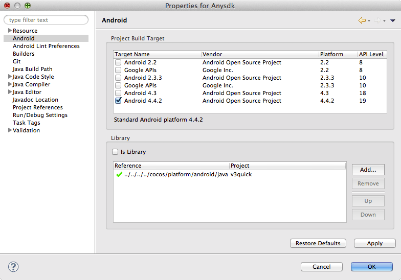

在 Eclipse ADT 里选择菜单 Window -> Show View -> Other…, 再选择 Android -> Devices
如果设备设置完成，那么在 Devices 标签页中就可以看到你的设备
在 AnySDK 项目上点击鼠标右键, 选择菜单 Debug As -> Android Application. 如果一切正常，等一会儿就可以在设备上看到运行画面了：

要编译 Android 功能，必须使用最新版本的 Android SDK 和指定的 r9d 版本 Android NDK。
不管是 Mac 还是 Windows 环境，都需要从 http://developer.android.com/sdk/ 下载最新版本的 ADT Bundle。
下载解压缩以后，运行 sdk/tools 目录中的 android 工具，对 SDK 进行更新。
由于网络问题，大家需要代理才能完成更新操作。
由于 cocos2d-x 还不支持最新的 NDK r10，所以我们需要从网络上搜索 NDK r9d 用于编译。
SDK 和 NDK 不能放在包含中文和空格的目录中。 Windows 下，SDK/NDK 必须和 quick 的文件放在同一个分区中。
在完成 SDK 和 NDK 的下载安装后，我们需要做一些环境配置工作：
Mac 下修改 .profile 文件：
启动 终端 应用程序, 运行命令:
$ if [ -f ~/.profile ]; then open -e ~/.profile; fi
如果没看到文本编辑窗口出现，则运行以下命令：
$ if [ -f ~/.bash_profile ]; then open -e ~/.bash_profile; fi
添加以下代码：
export ANDROID_NDK_ROOT=NDK绝对路径
export ANDROID_SDK_ROOT=SDK绝对路径
export ANDROID_HOME=${ANDROID_SDK_ROOT}
例如：
export ANDROID_NDK_ROOT=/Users/dualface/android-ndk-r9d
export ANDROID_SDK_ROOT=/Users/dualface/android-sdk
export ANDROID_HOME=${ANDROID_SDK_ROOT}
Windows 下在系统设置里添加以下环境变量：
ANDROID_NDK_ROOT=NDK绝对路径
ANDROID_SDK_ROOT=SDK绝对路径
ANDROID_HOME=%ANDROID_SDK_ROOT%
例如：
ANDROID_NDK_ROOT=C:\Work\android-ndk-r9d
ANDROID_SDK_ROOT=C:\Work\android-sdk
ANDROID_HOME=%ANDROID_SDK_ROOT%
quick 中带有一个 AnySDK 的示例，我们可以编译这个示例来检查准备工作是否就绪：
AnySDK 是一个极为方便的工具，可以大大减低接入 SDK 的工作量。
详情请访问：http://www.anysdk.com/
AnySDK 为 CP 商提供一套第三方SDK接入解决方案，整个接入过程，不改变任何 SDK 的功能、特性、参数等，对于最终玩家而言是完全透明无感知的。目的是让 CP 商能有更多时间更专注于游戏本身的品质，所有 SDK 的接入工作统统交给我们吧。第三方 SDK 包括了渠道 SDK、用户系统、支付系统、广告系统、统计系统、分享系统等等。我们不开 SDK，我们只帮您轻松接入第三方 SDK！
frameworks/runtime-src/proj.android 目录./build_native.sh，Windows 系统则运行 build_native.bat如果一切顺利，我们将看到输出信息的最后几行：
SharedLibrary : libgame.so
Install : libgame.so => libs/armeabi/libgame.so
注意:
proj.android 包含了anysdk,需要用anysdk来集成第三方sdk的推荐用这个工程, proj.android_no_anysdk 不包含anysdkbuild_native.sh 编译的是debug版本, build_native_release.sh 编译的是release版本如果编译失败，请仔细检查 SDK/NDK 版本、安装路径。
修改了环境设置后，必须重新打开终端窗口才能生效。
运行 build_native 只是编译了 C++ 部分，而 Android 应用还存在 Java 部分，这时就需要 Eclipse ADT 来进行了。
在先前下载的 ADT Bundle 中，已经包含了 Eclipse ADT 工具。只需要从 eclipse 目录中启动即可。下面的截图是 Mac 系统，但 Windows 系统中的操作完全一致。
启动后，需要先导入 cocos2d-x 的 Java 库：
frameworks/cocos2d-x/cocos/platform/android/java接下来导入 AnySDK 示例的 Android 工程：
frameworks/runtime-src/proj.androidAnySDK 工程上点击右键选择菜单 "Properties" 打开工程设置对话框Android，然后点击右侧 "Add" 按钮，添加 v3quick 库。如果添加之前 v3quick 库已经在 Library 列表中，则删除后重新添加检查 Project Build Target 是否是最新版本的 SDK

如果完成上述操作后，Eclipse ADT 窗口 Package Explorer 列出的 v3quick 和 AnySDK 项目文件夹上有红色错误图标。请仔细检查 v3quick 和 AnySDK 项目的操作步骤，以及 Project Build Target 是否是最新版本的 SDK。
Android 官方文档：http://developer.android.com/tools/device.html
Enable USB debugging on your device.
On Android 4.0 and newer, it’s in Settings > Developer options.
Note: On Android 4.2 and newer, Developer options is hidden by default. To make it available, go to Settings > About phone and tap Build number seven times. Return to the previous screen to find Developer options.
在系统设置中找到“开发者选项”，打开“USB调试”。Android 4.2 开始，开发者选项默认是隐藏的，需要打开设置->关于界面，然后在Build Number上点击七次才能打开开发者选项。
Set up your system to detect your device.
If you’re developing on Windows, you need to install a USB driver for adb. For an installation guide and links to OEM drivers, see the OEM USB Drivers document.
根据不同的机型，也许需要安装该机型特定的 USB 驱动程序。例如 Moto 就必须安装 Moto 的 USB 驱动。
Connect your device.
完成设置后，将设备连接到开发机，并解锁设备。
在 Eclipse ADT 里选择菜单 Window -> Show View -> Other…, 再选择 Android -> Devices
如果设备设置完成，那么在 Devices 标签页中就可以看到你的设备
在 AnySDK 项目上点击鼠标右键, 选择菜单 Debug As -> Android Application. 如果一切正常，等一会儿就可以在设备上看到运行画面了：
首先确保已经能够正常编译 Android 项目。
如果是 Windows 系统，还需要添加 JAVA_HOME 环境变量，指向 JDK 所在目录。并且将 JDK 的 bin 目录路径加入 PATH 环境变量。
如果环境未搭建好或者未配置好，运行时会在命令行报相关错误提示并返回非 0 的错误码。
在终端窗口中，进入工程的 proj.android 目录，然后运行 build_apk 脚本。
proj.android/<项目名-日期-时间>.apk 文件，并返回 0 值。build_apk 支持下列参数：
-classpath <路径>
指定查找用户类文件的位置。
如果有额外的第三方 jar 包需要集成可能会需要添加此参数。默认情况下不需要指定此参数。
-jv <版本号>
指定要使用的 JDK 版本号。默认参数为1.6。
如果使用其他版本的 JDK，可能需要指定此参数与要使用的 JDK 版本相一致。
-api <版本号>
指定要使用的 Android 的 api 版本号。默认参数为19，即使用 android-19。
-bt <版本号>
指定要使用的 ADT 的 build tools的版本号
一般不需要指定此参数，脚本运行时会自动到 ANDROID_SDK_ROOT/build-tools 目录下查找可用的版本。如果此目录下有多个版本，例如有 android-4.4.2 和 android-4.3 ，则可以通过 -bt 4.4.2 来强制指定其中的 4.4.2 版本，但即使不指定也会找到其中一个来使用。
-k <文件路径> -kp <口令> -ksa <密钥库名称>
三个参数分别指定：要用于签名的密匙库文件，密钥库口令和密匙库名称。
例如 -k mycert.keystore -kp 123456 -ksa mycert
-nosign
不对 apk 进行签名。
指定这个参数后，输出的 apk 文件名是 proj.android/<项目名-日期-时间>-unsigned.apk 。
-bldm release
编译relase版本, 要debug版不要加此参数
~
在 quick 中可以使用模块化编译功能，按照项目需求编译出更小的可执行文件。
要启用这个功能，开发者需要打开项目中的 proj.android/jni/Application.mk 文件，然后将不需要的模块值改为 0。
| MACRO | 体积 | 功能 |
|---|---|---|
| CC_USE_CURL | 1.3M | 使用 CURL 库提供 HTTP 网络功能。关闭后，assetsmanager等相关功能也会被去掉。quick 在 Android 下使用 Android 系统的 Java 接口提供 HTTP 网络功能，所以 CURL 关闭后仍然可以使用HttpRequest。 |
| CC_USE_TIFF | 514KB | 使用 TIFF 图像格式。 |
| CC_USE_WEBP | 208KB | 使用 WebP 图像格式。 |
| CC_USE_JPEG | 368KB | 使用 JPEG 图像格式。 |
| CC_USE_PHYSICS | 416KB | 使用物理引擎。 |
| CC_USE_3D | 212KB | 使用 3D 模块。 |
| CC_USE_SQLITE | 367KB | 使用 Lua 的 Sqlite 数据库扩展 lsqlite3。 |
| CC_USE_CCSTUDIO | 1.2M | 使用 Cocos Studio 支持模块。 |
| CC_USE_CCBUILDER | 208KB | 使用 Cocos Builder 支持模块。 |
| CC_USE_SPINE | 92KB | 使用 Spine 支持模块。 |
| CC_CODE_IDE_DEBUG_SUPPORT | 使用 cocos IDE 调试支持模块。在 release 版本里自动关闭，因此没有统计它在release版本下的体积。 |
只需要在 Applicaiton.mk 中将相应的宏设置为 0，然后重新编译就可以得到更小的可执行文件。
在proj.android_no_anysdk工程中，以上可选模块均已经关闭。因此如果直接使用no_anysdk工程来编译，生成的apk包将不支持上述模块功能，如需要请自己修改相应的开关。
还有一些常用的基础模块可以去除，由于可能影响常用的功能，请根据自己的情况移除。打开文件 frameworks/runtime-src/Classes/lua_module_register.h ，分别注释掉以下语句：
register_cocosdenshion_module(L); // 简单音效模块
register_network_module(L); // 网络模块，如 socket 和 websocket
register_ui_moudle(L); // 基础UI库，如编辑框等
register_extension_module(L); // 基本扩展，如 TableView 等
register_audioengine_module(L); // audio engine 模块